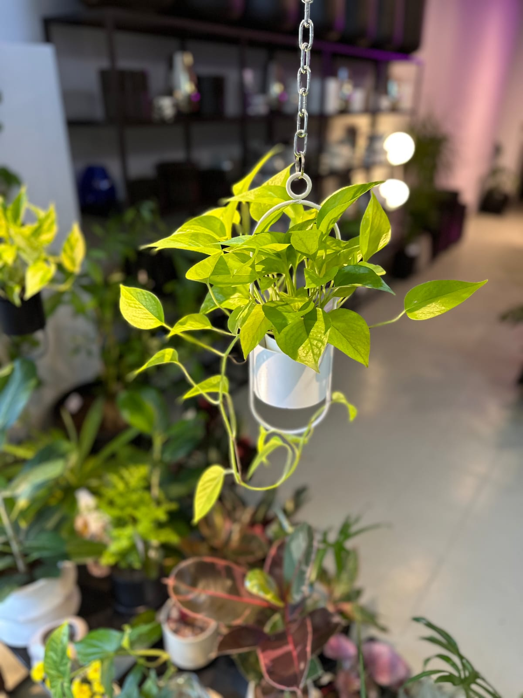

Potus lemon
Potus Limón (o Potus Lemon). Planta purificadora del aire, perfecta para principiantes. Es una de las variedades más divertidas y distintivas de la familia de los potus. Sus hojas color verde amarillento muy claras u brillantes no pasan desapercibidas, por eso también se la conoce como Potus Neón. Para mantener ese tono hay que poner la planta en puntos luminosos, por lo contrario el color se apagará y oscurecerá.
Fittonia
Una planta pequeña y muy llamativa ideal para ese rincón que te faltaba iluminar. Hay que entenderla, es una planta tropical y como se vendrán dando cuenta, les gusta húmedo pero no encharcado. Siempre es preferible que la tierra se seque un poco y no que esté todo el tiempo mojada. Un plus, no es tóxica para animales.
Philodendron
Realmente es una planta que se siente muy a gusto con nuestros climas ya que, como habrás visto en su nombre, es una especie originaria del este de Sudamerica: Brasil, Bolivia, Paraguay y Argentina. Si lo queremos tener en el interior de nuestras casas o departamentos, nos tenemos que asegurar de tener un espacio bien luminoso para su ubicación asegurándonos que en ningún momento el sol le pegue en forma directa a sus hojas. Si tenemos la posibilidad de tenerla directamente en suelo en un jardín, no va a dejar de crecer, siempre y cuando nos aseguremos de ubicarla en un lugar que esté siempre al reparo de los rayos del sol.

Hemigraphis
La Hemigraphis, originaria de Asia, es una planta exótica y vibrante que agrega color y alegría a cualquier espacio. Descubre cómo cuidar y disfrutar de esta fascinante planta en tu hogar. La Hemigraphis prefiere luz brillante indirecta. Colócala en un lugar donde reciba luz filtrada, como cerca de una ventana orientada al este o al oeste. Evita la luz solar directa intensa, ya que puede quemar las hojas.